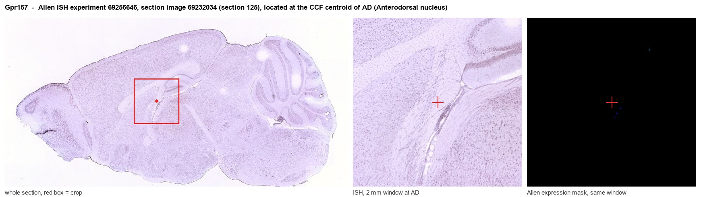
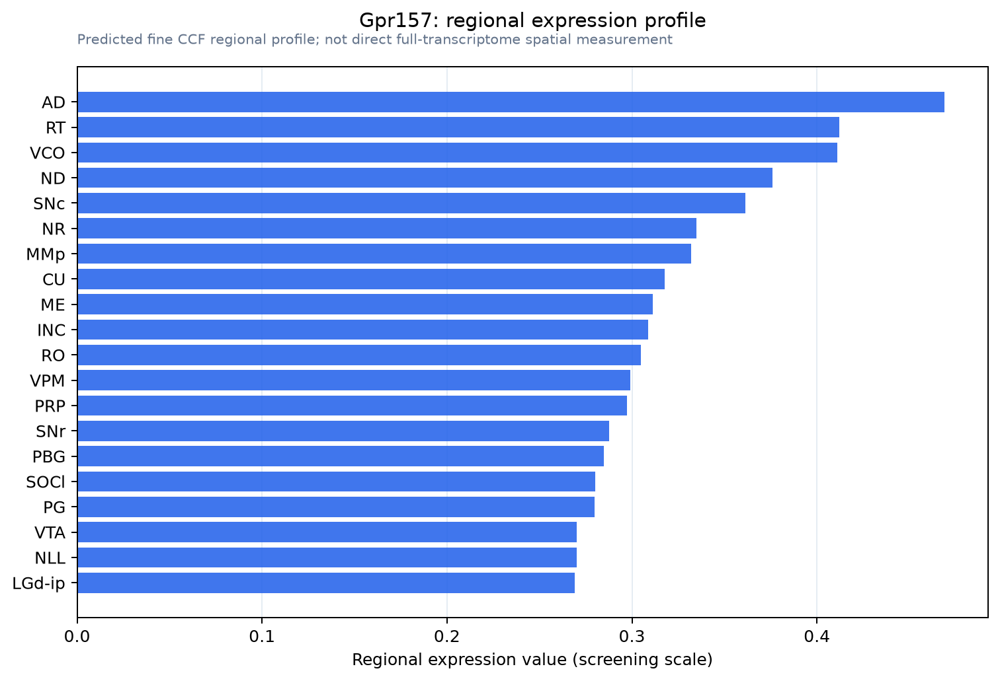

Gpr157
G protein-coupled receptor 157
Spatial tier: REGION_BIASED · Class: GPCR · Top region: AD (Anterodorsal nucleus) · Positive regions: 40/554
42.2Discovery Score
35.0Targetability Score
CEvidence grade C
What this means: Gpr157: fine CCF profile is region-biased toward AD (top regions: AD, RT, VCO, ND, SNc); this is a discovery lead, not direct proof.
Function in AD: evidence, prediction, innovation
- Gene function
- Gpr157 encodes an orphan GPCR that localises to the primary cilium. Takeo 2016 showed it signals through Gq and the IP3 pathway in the cilia of radial glial progenitors, where it promotes their differentiation into neurons. No endogenous ligand has been identified, and almost nothing is known about its role in mature neurons.
- Region function
- The anterodorsal nucleus of the thalamus is the core of the head-direction system: its neurons fire as a function of the animal's heading, driven by vestibular input relayed through the lateral mammillary nucleus, and they project to postsubiculum and retrosplenial cortex to orient the grid- and place-cell network.
- Published in this region
- inferred No region-specific literature found. GPR157 has been characterised only in ciliated neural progenitors (Takeo 2016) and in tumour transcriptomics, with nothing addressing adult thalamus. The anterodorsal nucleus itself is exceptionally well characterised as the head-direction relay (Taube 1995; Stackman 1997; Peyrache 2019), and primary cilia bearing GPCRs are known to persist on adult thalamic neurons, which is the closest biological link.
- Predicted function
- Prediction: in mature anterodorsal neurons GPR157 would most plausibly persist on the primary cilium as a Gq-coupled modulator, converting a CSF-borne or locally released ligand into IP3 and calcium signals that set the gain and adaptation of head-direction firing rather than the directional tuning itself. Conditional deletion in adulthood is predicted to leave head-direction tuning intact but degrade firing-rate stability and slow the re-anchoring of the directional signal to visual landmarks after cue rotation. A developmental knockout may instead reduce anterodorsal neuron number through the progenitor phenotype, confounding the circuit readout.
- Innovation
- ★★★★★ 5/5 A ciliary orphan GPCR in the head-direction relay is completely unstudied, and anterodorsal recording is a mature technique that would give an unusually precise phenotype readout.
- Tools
- Gpr157 knockout mice and the shRNA constructs from Takeo 2016; no selective ligand or widely used antibody; anterodorsal neurons accessible with CAV2-Cre or retro-AAV from postsubiculum and retrosplenial cortex and with Slc17a6-IRES-Cre; tetrode and Neuropixels recording of head-direction cells provides the readout.
- References
Direct evidence located at the region

Allen ISH experiment 69256646, section image 69232034 (section 125): the section that contains the CCF centroid of Anterodorsal nucleus according to the Allen image-to-atlas alignment (reference_to_image), with a 2 mm window around that point. Left: whole section, red box = window. Middle: ISH signal. Right: Allen's expression-mask view of the same window. open this image in the Allen viewer
Look it up yourself: Allen Mouse Brain ISH for Gpr157Allen reference atlas: AD (structure 64)ABC Atlas MERFISH viewer(in the ABC Atlas choose dataset MERFISH-C57BL6J-638850-CCF, colour cells by gene "Gpr157" or by parcellation_substructure "AD")All genes confined to AD + 3-D brain
Direct spatial evidence
MERFISH REGION LOCATOR

Regional expression figure

Predicted WMB × fine-CCF profile; not direct full-transcriptome spatial measurement.
Spatial profile
Evidence and specificity
- Evidence status
- PREDICTED_FINE
- Direct sources
- None; predicted localization only
- Exclusive threshold
- 12 positive regions out of 554
- Spatial specificity
- 0.285
- Top-region fraction
- 0.045
- Filter status
- PASS
Interpretation limits
- Cell-type-to-region projection is imputed expression, not direct spatial measurement.
- Adult reference atlases do not establish stability across age, sex, strain, state, or disease.
- Transcript abundance does not guarantee protein abundance or genetic-tool performance.